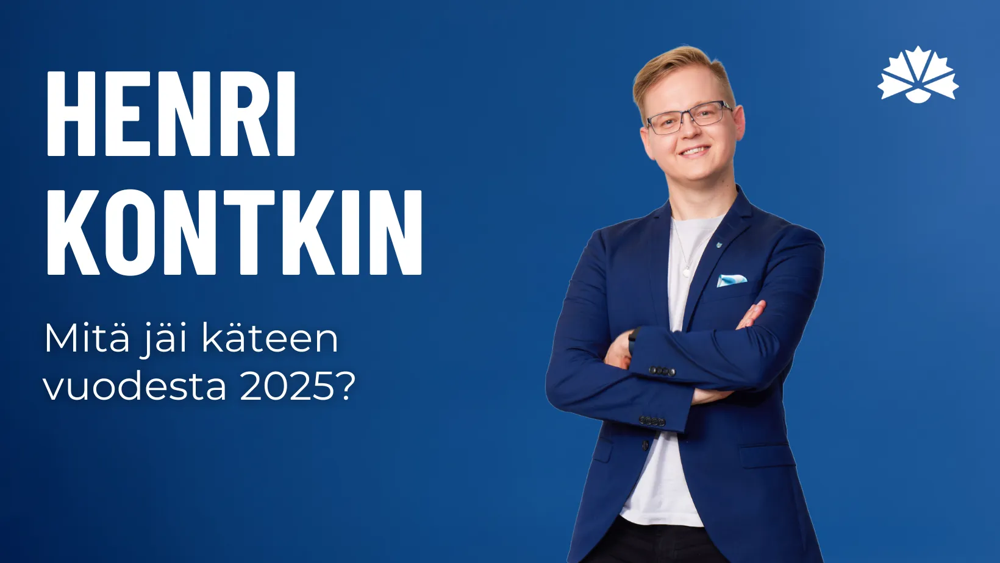
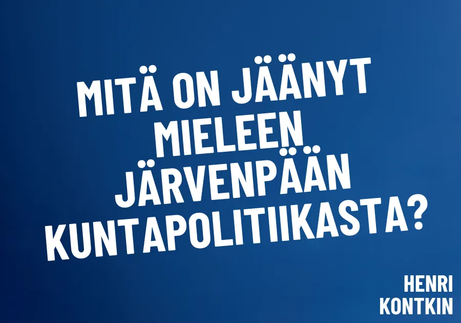
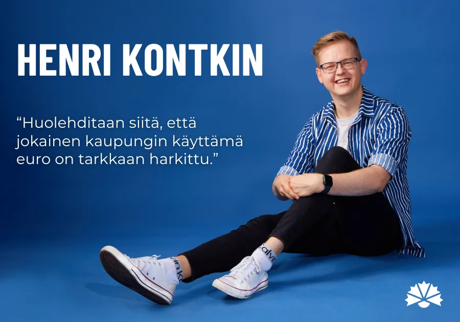
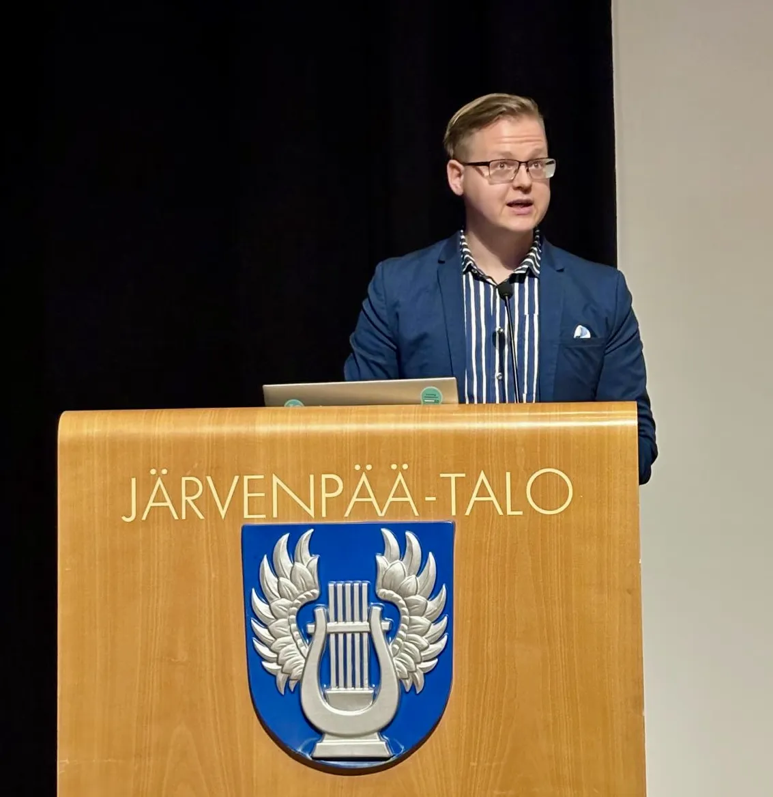
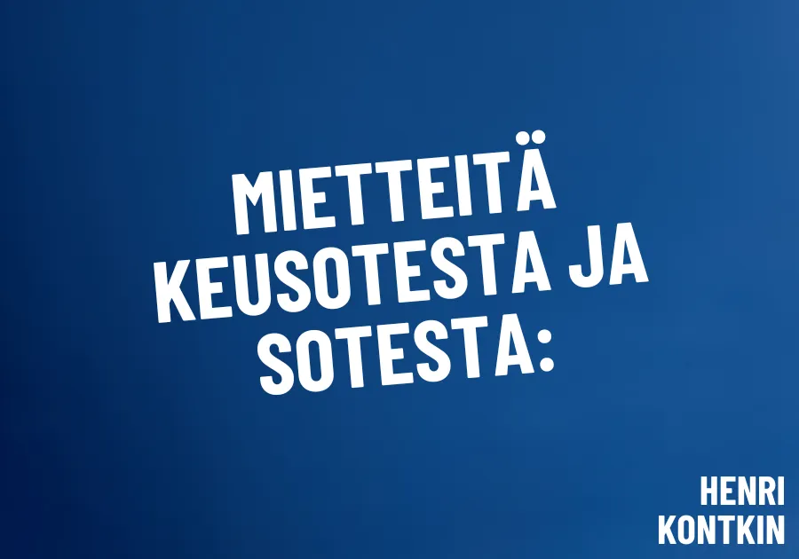
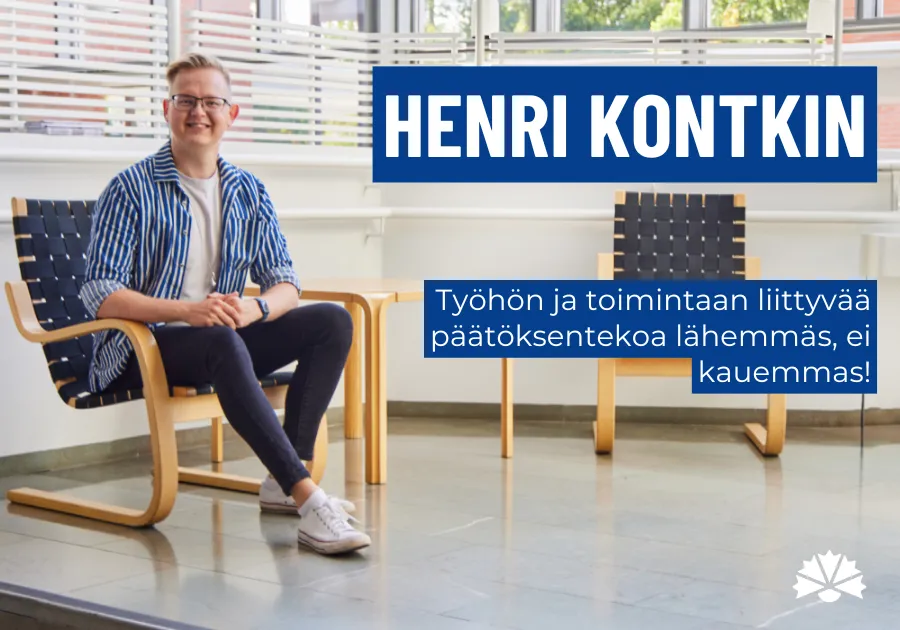
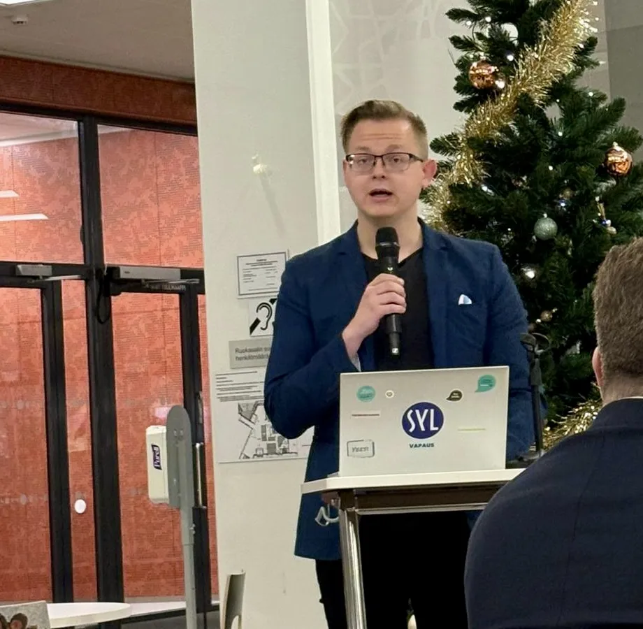

Mitä jäi käteen vuodesta 2025?

Vuosi 2025 on pian tulossa päätökseensä. Edessä siintää vuoden vaihteen tauko, jolloin emme kokoonnu Järvenpäässä tai Keski-Uudenmaan hyvinvointialueella politiikan merkeissä. Näin voimme ladata hetken akkuja tulevia koitoksia varten.
Mennyt vuosi on ollut kyllä vauhdikas. Kevään kunta- ja aluevaalit olivat poliittinen tihentymä, joka merkitsi vääjäämättä myös muutosta. Vaalien jälkeen kesäkuussa uusi valtuustokausi ja uudet luottamushenkilöt aloittivat tehtävissään. Muutos on näkynyt esimerkiksi Järvenpään eri päättävissä elimissä, sillä niiden keskinäiset valtasuhteet ovat keikahtaneet eri suuntiin.
Omalla kohdallani muutos oli suurin hyvinvointialueen puolella. Sain aluevaaleissa luottamuksenne toimia Järvenpään kaupunginvaltuutetun roolin lisäksi myös Keusoten aluevaltuutettuna. Kesäkuussa käynnistynyt uusi aluevaltuustokausi on tuonut myös eri roolien yhdistämisen haasteen arjen kiireiden keskelle.
Kohti uutta vuotta – ensin kuluvan vuoden oppeja talteen
Vuoden lopun lähestyminen sekä tämän tuoma tauko kokouksista tarjoaa myös mahdollisuuden pohtia, mitä olemme tästä vuodesta oppineetkaan. Mitä voimme ottaa kuluneilta kuukausilta muistiin tulevaa varten?
Seuraavaksi seuraakin kokoelma mietteitä, joita tästä vuodesta on jäänyt päällimmäisenä mieleen. Ne eivät ole mitenkään loogisessa järjestyksessä. Pohdinnat voivat herättää teissäkin ajatuksia, ja kuulisin näistä heränneistä ajatuksista erittäin mielelläni.

- Innolla uuteen valtuustokauteen. Vaalipäivänä olin häkeltynyt, sillä sain kuntavaaleissa kokoomuslaisista toiseksi eniten ääniä Järvenpäässä. Tämä vahva mandaatti äänestäjiltä soi minulle myös mahdollisuuksia hakea painavia vastuutehtäviä uudelle valtuustokaudelle. Sain mahdollisuuden jatkaa työtäni kaupunginhallituksessa ainakin vuodet 2025-2027. Olen lisäksi kiitollinen kokoomuksen uuden valtuustoryhmän jäsenille, jotka valitsivat minut puheenjohtajamaan ryhmäämme.
- Talous mahdollistaa tekemisen, ja siksi siitä syntyy aina eniten keskustelua. Tänäkin syksynä kaikki kilpistyi lopulta marraskuun talousvaltuustoon. Kaikki me Järvenpään luottamushenkilöt haluamme ajatella kaupungin ja järvenpääläisten parasta. Tavoitteemme, painopisteemme ja keskeiset keinomme Järvenpään edistämiseksi vaihtelevat kuitenkin puolueittain ja valtuutetuttain. Tänäkin syksynä olemme keskustelleet paljon taloudesta. Ilman euroja ei saada mitään aikaan. Niukka taloustilanteemme johti mm. yt-menettelyn toteuttamiseen kaupunkiorganisaatiossa. Olemme kääntäneet siten jälleen uusia kiviä saadaksemme taloutta pysyvästi vakaammalle uralle, kasvaneista työttömyysmenoista huolimatta.
- Järvenpää nostaa kunnallisveroa, eikä se ole hyvä asia. Tästä äänestimme tiukan väännön jälkeen marraskuun valtuustossa. Viime vaalikaudella (2021–2025) veronkorotukset onnistuimme torjumaan, mutta nyt kunnallisveromme nousee +0,2 %-yksikköä (7,6 –7,8 %). Järvenpää on jo Suomen kalleimpia kuntia omakotitaloasujalle, eikä tämä korotus tule helpottamaan tilannetta kuntalaisten ostovoiman osalta. Olemme jatkossakin kireämpi kunnallisverottaja kuin esimerkiksi Kerava tai Tuusula.
- Eurot lähtevät eivät saa lähteä laukalle. Tärkeintä on pitää huolta siitä, että jokainen Järvenpään kaupungin käyttämämme euro on harkittu euro. Kun tulomme eivät ole enää samalla tasolla kuin ennen sote-uudistusta, ei esimerkiksi uusien investointien usein edellyttämää velanottoa saa Järvenpäässä päästää rajuun kasvuun.

- Uudet investoinnit suurennuslasin alle. Tämä tarkoittaa sitä, että esimerkiksi Järvenpään Yhteiskoulun Kansakoulunkadun rakennuksen remonttia ja sen budjettia (15 milj. €) on ensi vuonna tarkasteltava hyvin tarkkaan. Kun valtuusto päätti äänin 29-22 pitää Kansakoulunkadun remonttibudjetin korkeammalla tasolla suhteessa aiempaan n. 7,6 miljoonan korjauksen tasoon, on eurojen käyttöä tarkempien suunnitelmien valmistuessa vielä arvioitava tarkasti.
- Hankkeet tärkeysjärjestykseen. Samanaikaisesti emme voi toteuttaa esimerkiksi kymmenien miljoonien eurojen hankkeita kuten vielä ennen soteuudistusta kykenimme. Esimerkiksi jos Järvenpää-talon peruskorjaukseen tullaan vuosina 2031-32 käyttämään yli 16 miljoonaa euroa ja samanaikaisesti uimahallia peruskorjataan noin 13 miljoonalla vuosina 2029-31, ei noille vuosille voi ajoittaa lisää isoja investointeja talouden heikentyneen kantokykymme vuoksi.
- Mitä Järvenpäässä tehdään itse – ja mitä kannattaa ulkoistaa? Olemme kuluvana vuonna toteuttaneet esimerkiksi alueurakan kilpailutuksen (jonka voitti lokakuussa työnsä aloittanut Terranor Oy) ja aloittaneet koulujen ja päiväkotien ateriapalveluiden kilpailutuksen (nykyään tuottajana Palmia Oy). Myös kaupungin omistamien tilojen rakennuttamis- ja kiinteistöjohtamisesta sekä puhtaanapidosta vastaavan Mestaritoiminnan osalta on käyty keskustelua siitä, mitä kaupungin kannattaisi tuottaa itse, ja minkä palvelun ostamme. Sopimukset ovat usein pitkiä, joten kilpailutuksessa on oltava tarkkana. Samalla on pohdittava, saataisiinko vastaavaa laatua joko osittain tai kokonaan itse toteuttamalla. Tämä periaate sopii myös kaupungin konsultti- ja asiantuntijapalveluiden ostoihin.
- Kulttuurijuuriamme tuetaan parhaiten yhteistyössä. Olemme Järvenpäässä erittäin kiitollisia Elisa Paloheimon ja Paloheimon perinnesäätiön yhteensä 1,4 miljoonan euron lahjoituksista uuden kaupungin taidemuseon toteuttamiseksi nykyisten kellaritilojen tilalle. Muistetaan myös, että kaupungin alueellamme tapahtuva kulttuuritoiminta elää siitä nauttivista ihmisistä. Käykäämme siis runsaasti eri tapahtumissa ja kulttuuririennoissa ensikin vuonna!
- Sibelius on Järvenpäälle iso asia, jatkossa vieläkin suurempi. Joulukuussa, Sibeliuksen syntymäpäivänä, julkistimme yhteistyösopimuksen Sibeliuksen perintöä edustavien tahojen kanssa. Olen ylpeä siitä, että voimme todeta jatkossa olevamme virallinen Sibeliuksen kotikaupunki. Saamme lisäksi käyttää Sibeliuksen arvokasta perintöä myös kaupunkimme markkinoinnissa,tarjoten vastaavia yhteistyön mahdollisuuksia myös järvenpääläisille yrityksille ja muille toimijoille. Tuusulanjärven taiteilijayhteisön mainetta voidaan näin kohottaa entistäkin korkeammalle, jos teemme yhdessätuumin tätä brändityötä.
- Kaupunkistrategiassa mietitään vahvemmin kasvua. Kytkemme tulevassa Järvenpään strategiatyössä kaupungin kasvuun liittyvät tavoitteet osaksi kaupungin muita tärkeitä painopisteitä: kuinka tuotamme asukkaille parhaiten hyvinvointia, sujuvaa arkea ja hyvää elämää Järvenpäässä. Tätä on vaikea olla pohtimatta ilman kantaa siitä, tulisiko järvenpääläisten määrä kasvaa reippaammin, maltillisemmin vai ei juuri lainkaan. Tämä vaikuttaa myös siihen, mihin meillä on rahkeita. Toisaalta kasvu on myös paljon muutakin kuin asukasmäärän lisääntymistä. Siihenkin kuluneena syksynä teimme analyysityötä kaupunginhallituksessa ja valtuustossa.

- Asuminen kirvoittaa Järvenpäässä erityisen paljon keskustelua. Yhteisenä tavoitteenamme on varmistaa, että järvenpääläisille (sekä nykyisille että tuleville) löytyisi aina elämäntilanteeseen sopiva asunto juuri täältä. Emme tahdo, että sen vuoksi meiltä joutuisi kukaan muuttamaan toisaalle. Tarkemmista seikoista olemme kuitenkin jonkin verran eri mieltä. Asumiseen liittyvien linjausten määrittely jatkuu strategian päivittämisen jälkeen. Kirjoitin itse syksyllä laajemmin ajatuksiani Järvenpään asuntopolitiikkaan, blogiin pääset tästä.
- Yrityksille suunnattua kasvu-hubia tulisi lähteä painokkaammin edistämään. Kasvu-hubin kaltainen yritysympäristö voisi olla esimerkiksi tilojen tarjoamista yhteiskäyttöön edes osittain kaupungin mahdollistamana, yritysverkostojen vahvistamista ja yhteisten tapahtuma-alustojen rakentamista. Tällä voisimme tukea esimerkiksi yhteisöverotulojen kasvua, joka on yhdessä havaittu tärkeäksi kaupungin kehityskohteeksi.

- Syvälle soteen sukellus. Uudet roolit aluevaltuutettuna ja Lapset, nuoret ja työikäiset -lautakunnan jäsenenä ovat tuoneet soten yhä vahvemmaksi osaksi arkea. Olen saanut työni puolesta toimia jo muutaman vuoden ajan Ylioppilaiden terveydenhoitosäätiön (YTHS) hallituksessa, mutta talousvaikeuksien keskellä painiva hyvinvointialue on uutena haasteena päätöksenteossa.
- Luottamuksesta kaikki lähtee. Keusoten on pyrittävä vastaamaan kansalaisten heikentyneeseen sosiaali- ja terveyspalveluiden luottamukseeen - ja tuomaan turvaa, jota meiltä odotetaan ja kovasti kaivataan. Haaste on valtakunnallinen, mutta ratkaisun avaimia löytyy meiltä itseltämmekin.
- Keusoten talous on vakavassa paikassa. Emme ole saamassa kertyneitä alijäämiämme katettua ensi vuoden loppuun, emmekä jatkoaikaankaan (2028) mennessä. Tämä tuo meille tulevaan vuoteen vielä murehdittavaa. Toisaalta lakisääteiset palvelut on turvattava, näin toteaa perustuslakikin. Alueemme on kuitenkin kiritettävä työtään, eikä uusiin lisäylijäämiin ole enää varaa.
- Ensi vuosi tulee näyttämään, onko meillä edellytyksiä selvitä itsenäisesti taloutemme kanssa. Mikäli emme saa oikaistua riittävästi sitä uraa, jota olemme tähän saakka kulkeneet, seuraukset ovat vakavia. Saatamme alueena joutua myös valtiovarainministeriön johtamaan arviointimenettelyyn.
- Emme ole haasteidemme kanssa yksin. Kolme aluetta (Itä-Uusimaa, Keski-Suomi ja Lappi) ovat jo arviointimenettelyssä. Noin puolella hyvinvointialueista tarvitaan edelleen vahvempia ja painokkaampia toimia, jotta talous saadaan vakaalle, kestävälle uralle. Myös esimerkiksi henkilöstöpulan osalta alueet osittain kilpailevat keskenään, mutta tekevät myös yhteistyötä alan houkuttelevuuden osalta.
- Keusote haluaa hyvinvointia ja turvallisuutta asukkaille yhdessä. Tämä on vahva ja resurssimme hyvin tunnistava tie, jota pitkin voimme me luottamushenkilöt yhdesssä viranhaltijoiden ja muun henkilöstön kanssa kulkea. Tahtotila hyväksyttiin joulukuun aluevaltuustossa osana hyvinvointialuestrategiaa.
- Päätöksentekoa lähelle, ei kauas. Keusoten tulee pyrkiä aktiivisemmin siihen, että toimivia käytänteitä ja tapoja levitetään myös alueen sisällä eri toimintayksiköiden välillä. Tiimien ja yksiköiden vahvempi yhteisöohjautuvuus lisää keusotelaisten yhteishenkeä, tuo päätöksentekoa lähelle ja yhdessä asetettujen raamien puitteissa lisää itsenäisempää otetta työarjessa.

- Yhteistyötä edellytetään ja tahdotaan, mutta missä määrin sitä voidaan enää vaatia lisää? On sanomattakin selvää, että hyvinvointialueet tekevät jo laajasti yhteistyötä ja jakavat hyviä käytänteitä toisilleen. Toimintaa ja työtä kiritetään yhdessä. Kuitenkaan julkisuudessa erilaiset vaatimukset yhteistyöstä eivät vähene, vaikka yhteistyötä jo tehdään runsain mitoin. Jää nähtäväksi, riittääkö mikään lopulta.
- Totaalisia täyskäännöksiä on vaikea tehdä. Vaikka yhteinen tahtotilamme on säilyttää Keusote itsenäisenä, vahvana hyvinvointialueena, ei talouttamme voi tasapainottaa vaarantamalla liikaa asukkaiden palveluíta. Olemme tässä hankalassa raossa. Uskon kuitenkin, että meillä on edellytykset kestäviin ratkaisuihin. Kun vastuullinen resurssien hyödyntäminen ulotetaan koko Keusoteen, aina jokaisen ammattilaisen työotteeseen saakka, saamme kurssia ajan kanssa käännettyä.

Tässä kootusti joitakin ajatuksia, jotka tämä vuosi on päällimmäisenä jättänyt mieleen.
Näillä saatemietteillä haluan toivottaa Teille kaikille rauhallista joulua ja maltillisen riehakasta uuttavuotta 2026!